컴퓨터응용가공산업기사 (2019-09-21 기출문제)
1과목: 기계가공법 및 안전관리
1. 바이트의 끝 모양과 이송이 표면 거칠기에 미치는 영향 중 이론적인 표면 거칠기 값(Hmax)을 구하는 식으로 옳은 것은? (단, r=바이트 끝 반지름, S=이송거리이다.)
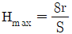
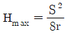
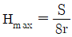
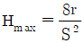
(정답률: 69%)

2. 선반의 크기를 표시하는 방법으로 옳은 것은?
- 기계의 중량
- 모터의 마력
- 바이트의 크기
- 배드 위의 스윙
(정답률: 80%)
3. 원통 연삭작업에서 공작물 1회전마다의 숫돌 이송이 틀린 것은? (단, f=이송, B=숫돌바퀴의 접촉너비이다.)
- 다듬질 연삭:
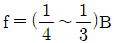
- 거친 연삭:
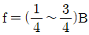
- 주철 연삭:
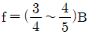
- 연강 연삭:
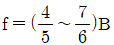
(정답률: 51%)
4. 선반이나 원통 연삭 작업에서 봉재의 중심을 구하기 위한 금긋기 작업에 사용되는 공구가 아닌 것은?
- V 블록
- 마이크로미터
- 서피스 게이지
- 버니어캘리퍼스
(정답률: 66%)
5. 연삭숫돌에 대한 설명으로 틀린 것은?
- 부드럽고 전연성이 큰 공작물 연삭에는 고운 입자를 사용한다.
- 단단하고 치밀한 공작물의 연삭에는 고운 입자를 사용한다.
- 연삭숫돌에 사용되는 숫돌입자에는 천연입자와 인조입자가 있다.
- 숫돌과 공작물의 접촉 면적이 작은 경우에는 고운 입자를 사용한다.
(정답률: 58%)
6. 밀링작업에서 상향절삭에 비교한 하향절삭의 특징으로 틀린 것은?
- 공구 수명이 짧다.
- 표면 거칠기가 좋다.
- 공작물 고정이 유리하다.
- 기계의 높은 강성이 필요하다.
(정답률: 71%)
7. 기어, 회전축, 코일, 스프링, 판 스프링 등의 표면가공에 적합한 숏 피닝(shot peening)은 어떤 하중에 가장 효과적인가?
- 굽힘 하중
- 반복 하중
- 압축 하중
- 인장 하중
(정답률: 63%)
8. 다음 중 M10×1.5의 탭 가공을 위하여 드릴링할 때 적당한 드릴의 지름은 몇 mm인가?
- 6.5
- 7.5
- 8.5
- 9.5
(정답률: 82%)
9. 삼침법으로 나사를 측정하고자 한다. 나사의 축선에 평행하게 측정하였을 때 나사산의 홈과 폭이 상등하게 되는 가상원통의 지름은?
- 골지름
- 끝지름
- 바깥지름
- 유효지름
(정답률: 76%)
10. 절삭공구로 공작물을 가공할 때 발생하는 절삭저항의 3분력에 해당되지 않는 것은?
- 배분력
- 주분력
- 칩분력
- 이송분력
(정답률: 86%)
11. 초경합금 공구에 내마모성과 내열성을 향상시키기 위하여 비폭하는 재질이 아닌 것은?
- TiC
- TiAl
- TiN
- TiCN
(정답률: 71%)
12. 길이가 긴 게이지 블록의 양 단면이 항상 평행하게 하기 위한 지지점은? (단, L은 게이지 블록의 길이이다.)
- 0.2113L
- 0.2203L
- 0.2232L
- 0.2386L
(정답률: 56%)
13. 일반 연강을 가공하는 트위스트 드릴의 표준각(인선각 또는 날끝각)은 몇 ° 인가?
- 110°
- 114°
- 118°
- 122°
(정답률: 79%)
14. 특수 가공 종류에 대한 설명으로 틀린 것은?
- 화학 가공은 미세한 가공에는 적합하나 넓은 면적을 가공하기에는 비효율적이다.
- 방전가공은 복잡한 형상의 금형의 캐비티(cavity)를 제작하는 데 편리하다.
- 와이어 컷 방전가공은 2차원 형상인 프레스 금형의 펀치를 제작하는 데 유용하다.
- 전해 가공은 전기적으로 도체인 재료를 대상으로 하며 부도체인 경우에는 가공이 불가능하다.
(정답률: 58%)
15. 산업안전에서 불안전한 상태를 a, 불안전한 행동을 b, 불가항력을 c라고 할 때 사고발생률이 높은 것에서 낮은 것의 순서로 알맞은 것은?
- a＞b＞c
- b＞a＞c
- a＞c＞b
- b＞c＞a
(정답률: 74%)
16. 니형 밀링머신의 크기는 무엇의 최대 이송거리로 표시하는가?
- 니
- 새들
- 테이블
- 바이스 조
(정답률: 67%)
17. NC 선반에서 사용하는 제어방식이 아닌 것은?
- 위치결정 제어
- 윤곽절삭 제어
- 직선절삭 제어
- 천공테이프 제어
(정답률: 85%)
18. 가공물이 대형이거나, 무거운 제품을 드릴 가공할 때에, 가공물을 고정시키고 드릴이 가공위치로 이동할 수 있도록 제작된 드릴링 머신은?
- 직립 드릴링 머신
- 터릿 드릴링 머신
- 레이디얼 드릴링 머신
- 만능 포터블 드릴링 머신
(정답률: 73%)
19. 가공물을 지그 중앙에 클램핑 시키고 지그를 회전시켜 가면서 가공물의 위치를 다시 결정하지 않고 전면을 가공ㆍ완성할 수 있는 지그는?
- 박스지그(box jig)
- 채널 지그(channel jig)
- 샌드위치 지그(sandwich jig)
- 앵글 플레이트 지그(angle plate jig)
(정답률: 60%)
20. 밀링머신에서 절삭할 때 칩(chip)의 체적을 구하는 식으로 옳은 것은? (단, 절삭폭:b(mm), 절삭 깊이:t(mm), 피드:f(mm)이다.)
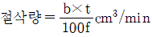
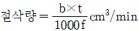
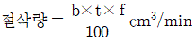
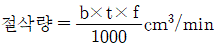
(정답률: 62%)
2과목: 기계설계 및 기계재료
21. 다음 중 비강도가 우수하여 Al 다이캐스팅 제품 대체용으로 자동차 부품 등에 많이 쓰이는 합금은?
- Mg 합금
- Au 합금
- Ag 합금
- Cr 합금
(정답률: 57%)
22. 다음 중 결정 구조가 면심입방격자인 것은?
- 크롬
- 코발트
- 몰리브덴
- 알루미늄
(정답률: 63%)
23. 다음 중 발전기, 전동기, 변압기 등의 철심 재료에 가장 적합한 특수강은?
- 규소강
- 베어링강
- 스프링강
- 고속도공구강
(정답률: 63%)
24. 철-탄소 평형 상태도에서 공정점과 관계된 조직은?
- 펄라이트
- 페라이트
- 베이나이트
- 레데뷰라이트
(정답률: 51%)
25. 다음 중 오스테나이트계 스테인리스강은?
- Fe - 4.5%C
- Fe - 18%Cr - 8%Ni
- Fe - 18%Mn - 8%Cr
- Fe - 22%Cr - 0.12%C
(정답률: 71%)
26. 다음 중 세라믹 공구의 특징과 가장 거리가 먼 것은?
- 충격에 강하다.
- 내마모성이 좋다.
- 내식성이 우수하다.
- 내열성이 우수하다.
(정답률: 71%)
27. 알루미늄 합금의 특징에 대한 설명으로 틀린 것은?
- 전기 및 열의 양도체이다.
- 대기 중에서는 내식성이 양호하다.
- 용융점이 1083℃로 고온 가공성이 좋다.
- 가볍고 전연성이 좋아 성형가공이 용이하다.
(정답률: 70%)
28. 탄성한도를 넘어서 소성 변화를 시킨 경우에도 하중을 제거하면 원래상태로 돌아가는 성질은?
- 신소재 효과
- 초탄성 효과
- 초소성 효과
- 시효경화 효과
(정답률: 74%)
29. 강을 오스테나이트가 되는 온도까지 가열한 후 공랭시키는 열처리 방법은?
- 뜨임
- 담금질
- 오스템퍼
- 노멀라이징
(정답률: 52%)
30. 다음 철강 조직 중에서 경도가 가장 높은 것은?
- 페라이트
- 펄라이트
- 마텐자이트
- 소르바이트
(정답률: 76%)
31. 바깥지름이 30mm인 사각나사에서 피치가 6mm, 나사산의 높이가 피치의 1/2일 때 나사의 유효지름은 몇 mm인가?
- 27
- 32
- 34
- 36
(정답률: 53%)
32. 96000Nㆍcm의 토크를 전달하는 지름이 50mm인 축에 풀리를 연결하기 위해 묻힘 키(폭×높이=12mm×8mm)를 적용하려고 할 때, 묻힘 키의 길이는 약 몇 mm 이상이어야 하는가? (단, 키의 전단강도만으로 계산하고, 키의 허용전단응력은 8000N/cm2이다.)
- 40
- 50
- 60
- 70
(정답률: 32%)
33. 다음 중 주철과 같은 취성재료에 가장 적합한 파손이론은?
- 최대주응력설
- 최대전단응력설
- 최대주변형률설
- 변형률 에너지설
(정답률: 60%)
34. 그림에서 기어 A의 잇수 ZA=70, 기어 B의 잇수 ZB=35이라 할 때, A를 고정하고 암 H를 시계방향(+)으로 2회전시킬 때 B는 약 몇 회전하는가? (단, 시계방향을 +, 반시계방향을 -로 한다.)
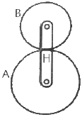
- -2
- +2
- -6
- +6
(정답률: 48%)
35. 겹판 스프링의 일반적인 특징으로 틀린 것은?
- 내구성이 좋고, 유지 보수가 용이하다.
- 판 사이의 마찰에 의해 진동을 감쇠한다.
- 트럭 및 철도차량의 현가장치로 잘 사용된다.
- 마찰 감쇠에 따라 미소 진동의 흡수에 특히 유리하다.
(정답률: 55%)
36. 베어링을 설계할 때 주의사항으로 틀린 것은?
- 마모가 적을 것
- 강도를 충분히 유지할 것
- 마찰저항이 크고 손실동력이 감소할 것
- 구조가 간단하여 유지보수가 쉬울 것
(정답률: 77%)
37. 풀리의 지름이 250mm, 회전수가 1400rpm으로 5kW의 동력을 전달할 때 벨트의 유효장력은 약 몇 N인가? (단, 원심력과 마찰은 무시한다.)
- 24
- 93
- 239
- 273
(정답률: 31%)
38. 원치(winch)로 질량이 2.4t인 물체를 6m/min의 속도로 감아올릴 때, 원치 동력은 약 몇 kW가 필요한가? (단, 원치의 효율은 80%라 한다.)
- 2.52
- 2.94
- 3.44
- 3.89
(정답률: 44%)
39. 다음 중 볼트 이음 또는 리벳 이음과 비교한 용접 이음의 장점으로 가장 적절하지 않은 것은?
- 기밀 및 수밀성이 우수하다.
- 잔류응력이 발생하지 않는다.
- 전체적인 제품 중량을 적게 할 수 있다.
- 공정수를 줄일 수 있고, 제작비가 저렴하다.
(정답률: 69%)
40. 브레이크 용량(brake capacity)을 구하는 식으로 옳은 것은?
- 마찰계수×접촉면적×회전속도
- 마찰계수×접촉압력×접촉면적
- 마찰계수×접촉압력×회전속도
- 접촉면적×드럼 반지름×회전속도
(정답률: 54%)
3과목: 컴퓨터응용가공
41. 다음 중 박판성형(LOM)에 대한 설명으로 가장 거리가 먼 것은?
- 재료와 접착제의 층이 교대로 나타나므로 제품의 물리적인 성질이 이방성을 띤다.
- 적층이 완료된 후 불필요한 부분을 재사용할 수 있으므로 재료낭비가 적다.
- 얇은 재료를 사용할 수 있으므로 잠재적인 정밀도가 높다.
- 각 층별로 윤곽만 처리하면 되므로 단면전체를 처리해야 하는 다른 공정보다 효율적이다.
(정답률: 55%)
42. 원추곡선(conic curve)을 그리기 위해 필요한 요소가 아닌 것은?
- 곡선의 양 끝점
- 양 끝점의 접선
- 곡선 위의 한 점
- 양 끝점의 곡률 반경
(정답률: 51%)
43. 다음 중 실루엣을 구할 수 없는 모델링 방법은?
- Wire frame model 방식
- Surface model 방식
- B-rep 방식
- CSG 방식
(정답률: 67%)
44. CSG(Constructive Solid Geometry)에 대한 설명으로 틀린 것은?
- 동일 모델의 경우 데이터의 기억용량이 B-Rep보다 커야 한다.
- 윤곽, 교차선, 능선 등의 경계 정보가 필요하면 이를 계산해 내야 한다.
- 기본도형을 직접 입력한다.
- 데이터의 수정이 용이하다.
(정답률: 49%)
45. CAD/CAM시스템 간에 데이터베이스가 서로 호환성을 가질 수 있도록 해 주는 모델의 입출력 데이터 표준 형식으로 사용되는 것은?
- ISO
- LISP
- ANSI
- IGES
(정답률: 73%)
46. 공간상의 한 점을 표시하기 위해 사용되는 좌표계로, 거리(r), 각도(θ), 높이(z)로 나타내는 좌표계는?
- 극 좌표계
- 직교 좌표계
- 원통 좌표계
- 구면 좌표계
(정답률: 50%)
47. 지정된 모든 점을 통과하면서도 부드럽게 연결된 곡선은?
- B-spline 곡선
- 스플라인 곡선
- NURB 곡선
- 베지어 곡선
(정답률: 63%)
48. 볼 엔드밀로 곡면을 가공할 때 가공 경로 사이에 남는 공구의 흔적은?
- undercut
- overcut
- chatter
- cusp
(정답률: 62%)
49. 퍼거슨 곡선의 3차 Hermite곡선식의 기하 계수에 해당하는 것은?
- 곡선상의 임의의 4개의 점
- 곡선의 양 끝점과 곡선상의 임의의 2개의 점
- 곡선의 양 끝점과 양 끝점에서의 접선 벡터
- 곡선상의 임의의 4개의 점에서의 접선 벡터
(정답률: 51%)
50. CNC 기계가공에서 가공계획에 해당되지 않는 것은?
- 도면파악
- 좌표계 설정
- 공작기계선정
- 가공순서결정
(정답률: 52%)
51. CAM 프로그램의 특징으로 틀린 것은?
- NC DATA의 신뢰도가 향상된다.
- 사람이 해결하기 어려운 복잡한 계산을 할 수 있다.
- 컴퓨터에서 수행하므로 다른 작업과 병행할 수 없다.
- 복잡한 형상 제품의 NC DATA 작성 시 시간과 노력이 단축된다.
(정답률: 81%)
52. BLU가 0.001mm인 공작기계에서 현재점(1, 2)에서 다음 점 (4, 6)까지 공구를 1cm/s의 속도로 이송하기 위한 출력은?
- x축 모터는 1초당 3000펄스, y축 모터는 1초당 4000펄스
- x축 모터는 1초당 4000펄스, y축 모터는 1초당 6000펄스
- x축 모터는 1초당 6000펄스, y축 모터는 1초당 8000펄스
- x축 모터는 1초당 30000펄스, y축 모터는 1초당 40000펄스
(정답률: 47%)
53. 중앙처리장치(CPU)와 메인 메모리(RAM)사이에서 처리될 자료를 효율적으로 이송할 수 있도록 하여 자료 처리속도를 증가시키는 기능을 수행하는 것은?
- 코프로세서
- 캐시 메모리
- BIOS
- CISC
(정답률: 72%)
54. 서피스 모델(surface model)의 특징으로 틀린 것은?
- 은선 제거가 가능하다.
- 복잡한 형상 표현이 가능하다.
- 물리적 성질을 구하기 어렵다.
- 유한요소법의 적용을 위한 요소 분할이 가능하다.
(정답률: 55%)
55. 어떤 도형을 X축으로 2배, Y축으로 3배 크게 하려고 할 때 변환행렬 T는?
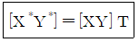
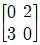
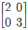
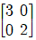
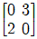
(정답률: 73%)
56. 솔리드 모델링의 B-Rep 표현 중 루프(loop)라는 용어에 관한 설명으로 옳은 것은?
- 하나의 모서리를 두 개의 다른 방향의 모서리로 쪼개어 놓은 것
- 모든 면에 대하여 이들을 내부와 외부로 경계 짓는 모서리들이 연결된 닫혀진 회로
- 면과 면이 연결되어 공간상에서 하나의 닫혀진 면의 고리를 이룬 것
- 면과 면이 연결되어 공간상에서 하나의 닫혀진 입체를 이룬 것
(정답률: 51%)
57. 웹에서 사용할 수 있는 데이터 포맷 중 3차원 그래픽 데이터를 위한 것은?
- CGM
- DWT
- VRML
- HTML
(정답률: 52%)
58. 3차원적인 물체의 형상 모델링 기법 중 아래 보기의 내용에 해당하는 모델링 기법은?
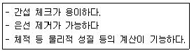
- 솔리드(solid) 모델링
- 서피스(surface) 모델링
- 셸 메시(shell mesh) 모델링
- 와이어프레임(wireframe) 모델링
(정답률: 75%)
59. NC 공작기계의 기계제어장치 중 공작기계의 작동을 제어하는 제어루프장치의 구성요소로 볼 수 없는 것은?
- 보간회로
- 보조기능 제어장치
- 감속과 역회전 처리회로
- 데이터 프로세싱 장치
(정답률: 46%)
60. CAD 시스템에서 곡면을 생성하는 방법이 아닌 것은?
- shell
- lofting
- sweeping
- Bezier patch
(정답률: 51%)
4과목: 기계제도 및 CNC공작법
61. 기계제도 도면 작업 중에서 부분 확대도를 올바르게 설명한 것은?
- 어떤 물체의 구멍이나 홈 등 한 부분만의 모양을 표시한 투상도
- 경사면에 대해 실제 모양을 표시할 필요가 있는 경우에 나타낸 투상도
- 그림의 일부를 도시해 그린 것으로 충분할 경우 그 부분만 도시해서 그린 투상도
- 특정 부위의 도형이 작아 치수기입이 곤란할 때 다른 곳에 척도를 크게 하여 나타낸 투상도
(정답률: 68%)
62. 다음 중 치수 공차를 나타내는 데 있어서 그 표시방법이 틀린 것은?
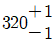
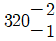
- 320 + 2/-1
- 320 ±1
(정답률: 66%)
63. 표면거칠기 기호의 도시와 관련하여 “16%” 규칙에 대한 설명으로 옳은 것은?
- "max"라는 표시가 없는 경우에 적용하는 것으로, 표면거칠기가 상한에 의해 규정된 경우 평가 길이를 토대로 특정한 값 중 16% 이하가 기호에서 규정한 값을 초과하는 경우에 해당 표면을 합격으로 간주한다.
- "max"라는 표시가 없는 경우에 적용하는 것으로, 표면거칠기가 상한에 의해 규정된 경우 평가 길이를 토대로 특정한 값 중 16% 이상이 기호에서 규정한 값을 초과하는 경우에 해당 표면을 합격으로 간주한다.
- "max"라는 표시를 사용하여 나타내는 것으로, 표면거칠기가 상한에 의해 규정된 경우 평가 길이를 토대로 특정한 값 중 16% 이하가 기호에서 규정한 값을 초과하는 경우에 해당 표면을 합격으로 간주한다.
- "max"라는 표시를 사용하여 나타내는 것으로, 표면거칠기가 상한에 의해 규정된 경우 평가 길이를 토대로 특정한 값 중 16% 이상이 기호에서 규정한 값을 초과하는 경우에 해당 표면을 합격으로 간주한다.
(정답률: 41%)
64. 관련형체에 적용하는 데이텀이 필요한 기하공차는?
- 진직도
- 원통도
- 평면도
- 원주 흔들림
(정답률: 58%)
65. KS 기계 재료 기호 중 스프링 강재인 것은?
- SPS
- SBC
- SM
- STS
(정답률: 72%)
66. 용접 기호 중에서 점 용접(spot weld)을 나타내는 것은?
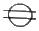
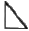
(정답률: 53%)
67. 다음 도면에 대한 설명으로 옳은 것은?
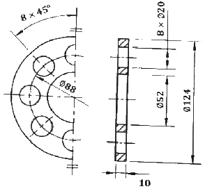
- 한쪽 단면도를 나타내었다.
- ø20인 구멍은 5개이다.
- 두께를 두면에서 알 수 없다.
- 45° 간격의 구멍은 모두 8개이다.
(정답률: 78%)
68. 도면에서 가는 실선으로 표시된 대각선 부분의 의미는?
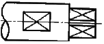
- 평면
- 곡면
- 홈 부분
- 라운드 부분
(정답률: 73%)
69. 구름 베어링의 안지름 번호와 안지름 치수가 잘못 연결된 것은?
- 안지름번호:00-안지름:10mm
- 안지름번호:03-안지름:17mm
- 안지름번호:07-안지름:30mm
- 안지름번호:/22-안지름:22mm
(정답률: 63%)
70. 제3각 정투상법으로 그린 아래 그림의 알맞은 우측면도는?
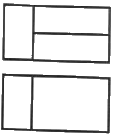
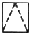
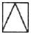
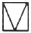
(정답률: 75%)
71. CNC 선반에서 가공 중 각 충돌로 인한 안전핀이 파손되었을 때 발생하는 경보(alarm)내용은?
- TORQUE LIMIT ALARM
- EMERGENCY L/S ON
- P/S ALARM
- OT ALARM
(정답률: 55%)
72. 다음은 ISO 선삭용 인서트(insert) 규격이다. 여기서 T의 의미는?
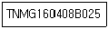
- 인서트 형상
- 인선 높이
- 여유각
- 공차
(정답률: 74%)
73. 제품을 가공하기 위하여 프로그램 원점과 공작물의 한 점을 일치시킨 좌표계는?
- 기계좌표계
- 공작물좌표계
- 구역좌표계
- 중분좌표계
(정답률: 74%)
74. 머시닝센터에서 ø12, 4날 황삭용 초경 평엔트밀로 SM45C의 공작물을 가공하고자 할 때, 공구의 이송속도 F는 약 몇 mm/min인가? (단, 절삭조건표에 의해 절삭속도는 35m/min이고, 공구 날당 이송 fz=0.06mm/tooth이다.)
- 183
- 223
- 253
- 283
(정답률: 53%)
75. 다음과 같은 CNC 선반 프로그램에 대한 설명으로 틀린 것은?
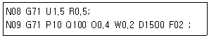
- P10은 지령절의 첫 번째 전개번호이다.
- Q100은 지령절의 마지막 전개번호이다.
- W0.2는 Z축 방향의 정삭여유이다.
- U1.5는 X축 방향의 정삭여유이다.
(정답률: 56%)
76. CNC 방전가공의 일반적인 특징으로 틀린 것은?
- 열에 의한 변형이 적으므로 가공 정밀도가 우수하다.
- 전극으로 구리, 황동, 흑연 등을 사용하므로 성형이 용이하다.
- 전극의 소모가 발생하지 않아 전극을 반복하여 사용할 수 있다.
- 복잡한 구멍도 전극만 만들면 간단히 가공할 수 있다.
(정답률: 67%)
77. 다음 중 CNC장치가 부착된 밀링기계에 해당장치를 설치함으로써 머시닝센터가 되며, 비절삭 시간을 단축하기 위해 부착되는 장치는?
- 암(arm)
- 베이스와 컬럼
- 자동공구교환장치
- 컨트롤장치
(정답률: 74%)
78. 준비기능 중에서 공구 지름 보정과 관련된 기능만을 묶어 놓은 것은?
- G41, G42, G43
- G40, G41, G42
- G43, G44, G49
- G40, G43, G49
(정답률: 63%)
79. CNC의 절삭 제어 방식이 아닌 것은?
- 위치결정 제어
- 직선절삭 제어
- 윤곽절삭 제어
- 디지털 제어
(정답률: 80%)
80. 다음 CNC선반 프로그램에서 공구가 P1점, P2점에 있을 때 주축의 회전수는 각각 약 몇 rpm인가?
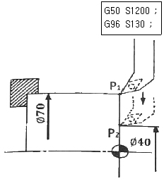
- P1=451, P2=1035
- P1=591, P2=1095
- P1=451, P2=1095
- P1=591, P2=1035
(정답률: 46%)
바이트의 끝 모양이 뾰족할수록 표면 거칠기가 작아지고, 이송이 길어질수록 표면 거칠기가 커진다. 이론적인 표면 거칠기 값(Hmax)은 다음과 같은 식으로 구할 수 있다.
Hmax = r/2 + S2/8r
따라서, 바이트의 끝 모양이 뾰족하고 이송이 짧을수록 표면 거칠기 값이 작아지고, 바이트의 끝 모양이 둥글고 이송이 길수록 표면 거칠기 값이 커진다.